01
동관·서관 다다미 객실
동관과 서관에 자리한 2인실과 4인실. 장지문 너머로 드는 은은한 빛과 다다미 향이 하루의 피로를 가라앉힙니다.
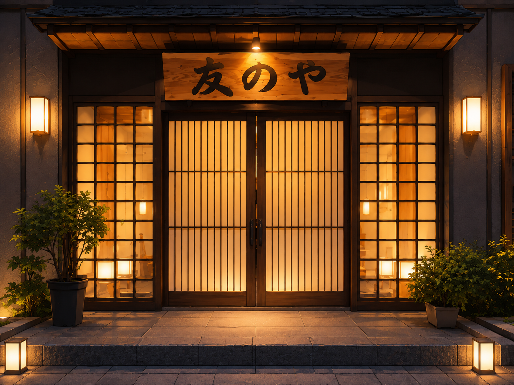
Ryokan
Tama · Since long ago
신주쿠에서 전차로 마흔 분, 등불이 켜진 골목
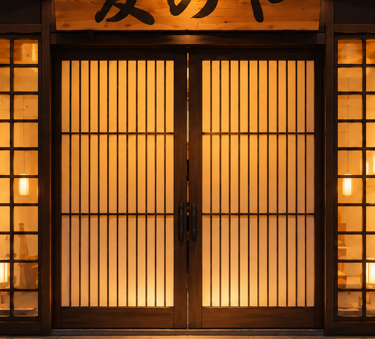
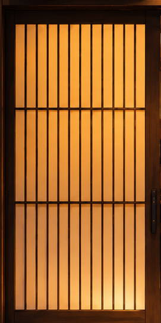
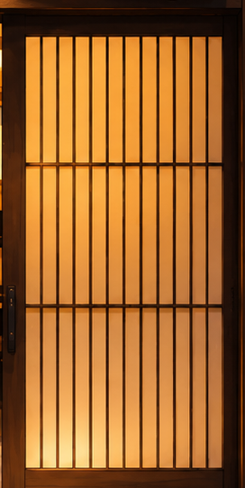
Ryokan · Tama
도쿄의 서쪽 끝, 시간이 천천히 흐르는 온천 마을.
오래된 료칸 세 채가 저마다의 방식으로 당신을 기다립니다.
About
도쿄 서쪽 끝, 타마(多摩). 신주쿠에서 전차로 마흔 분이면 닿는 이 작은 온천 마을에는 서로 경쟁하는 오래된 료칸 세 채가 저마다 등불을 밝히고 있습니다. 삐걱이는 복도, 나무의 냄새, 온천에서 피어오르는 김 — 어느 한 곳도 같지 않은 세 료칸이니, 객실도 온천도 손님을 맞는 종업원도 저마다 다릅니다.
The Three Houses
타마의 자랑인 세 료칸. 한 곳을 골라, 그곳의 객실과 온천, 종업원들을 만나 보세요.
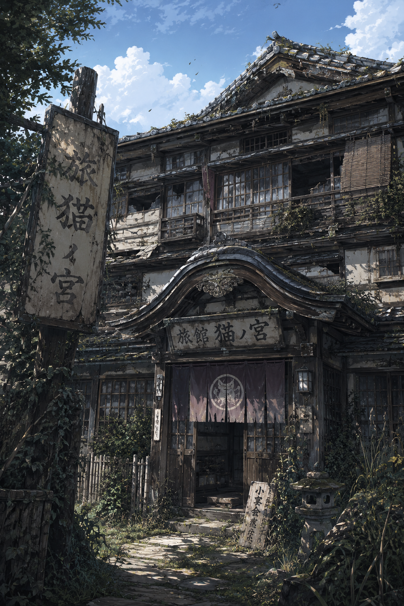
낡은 목조와 삐걱이는 복도, 오래된 나무 냄새가 배인 노포. 격식보다 온기로 손님을 맞으며, 경내에 소박한 온천 «냥냥탕»을 두고 있습니다.
동관과 서관에 자리한 2인실과 4인실. 장지문 너머로 드는 은은한 빛과 다다미 향이 하루의 피로를 가라앉힙니다.
여러 정자가 놓인 넓은 후원을 곁에 둔 방. 가끔 햇살이 드는 작은 중정의 고요도 함께 누립니다.
경내에 병설된 소박하고 정겨운 온천. 남녀 시간대를 나누어 운영하며, 늦은 밤의 김 서린 정적이 특히 좋습니다.
느긋하고 마이페이스. 좀처럼 자리에서 일어나지 않지만, 사람을 보는 눈만은 누구보다 날카롭습니다. 스스로를 «공작가의 당주»라 칭합니다.
오늘은 날씨가 좋네. …그러니 일은 내일 하자.
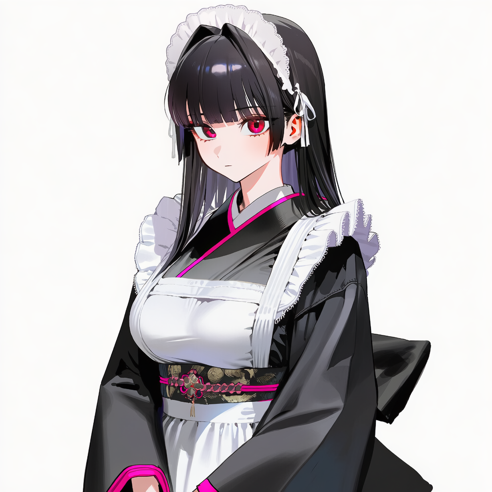
밝고 상냥한 현장의 기둥. 늘 졸린 눈을 하고도, 료칸에서 가장 부지런히 움직입니다.
필요하신 거 있으시면 언제든 불러주세요!
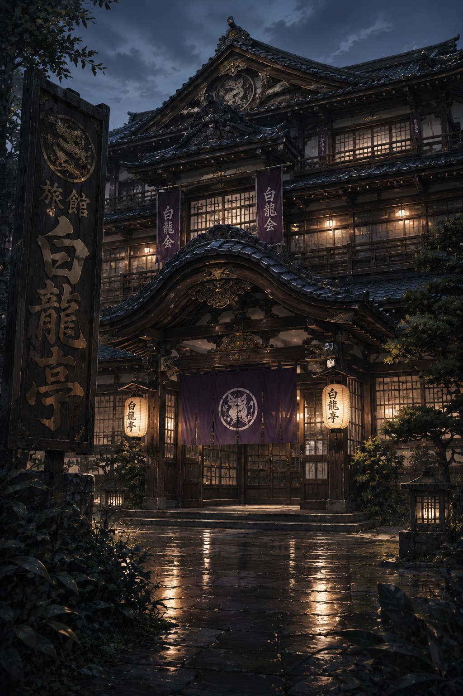
막말(幕末) 양식의 목조와 잘 손질된 기와지붕, 백룡 문양을 새긴 현판. 격조와 정적이 흐르는 료칸으로, 석조 온천 «백룡탕»을 자랑합니다.
족자와 도코노마를 갖춘 고급 좌식 대청. 격식 있는 하룻밤을 위한 가장 정갈한 방입니다.
잘 손질된 동관의 다다미 객실. 조용하고 단정한 2인실과 4인실을 갖추었습니다.
소나무와 연못이 어우러진 후원을 바라보는 객실. 계절의 빛이 창에 머뭅니다.
격조 있는 석조 탕. 백룡의 전설이 깃든 고요 속에서 몸을 누입니다. 남녀 시간대를 나누어 운영합니다.
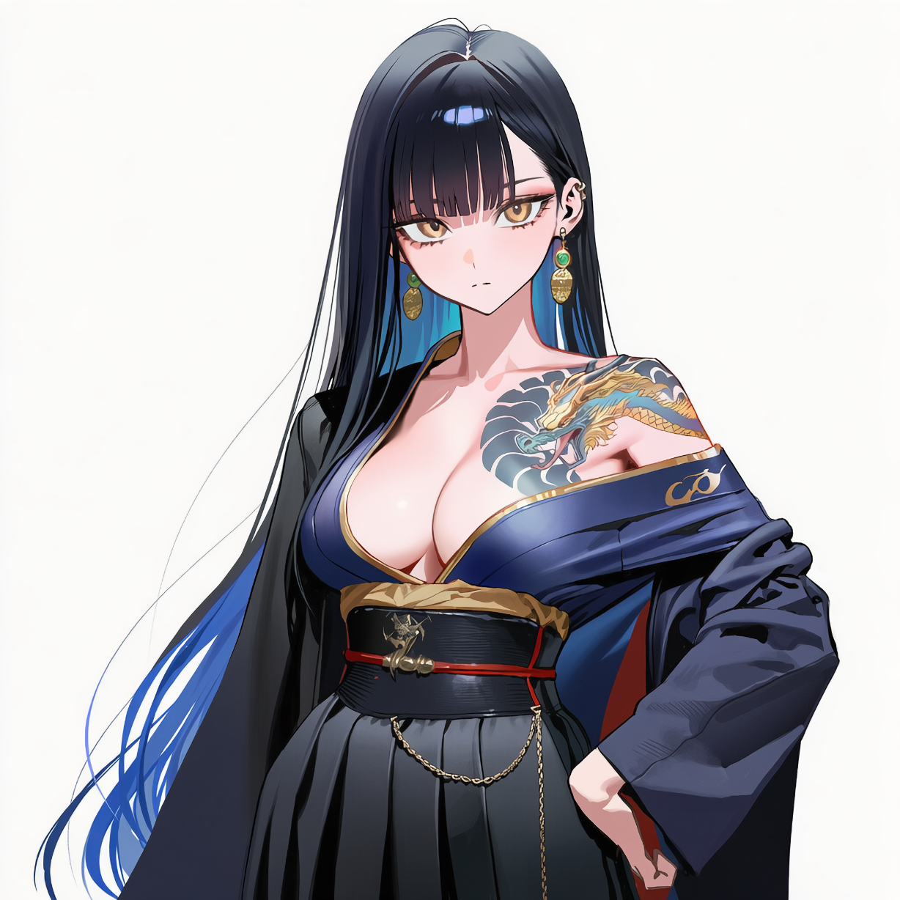
후원 정자에서 사색에 잠긴 모습으로 자주 발견되는, 조용하고 종잡을 수 없는 주인입니다.
…후원 소나무가 올해 유독 잘 자랐네요.
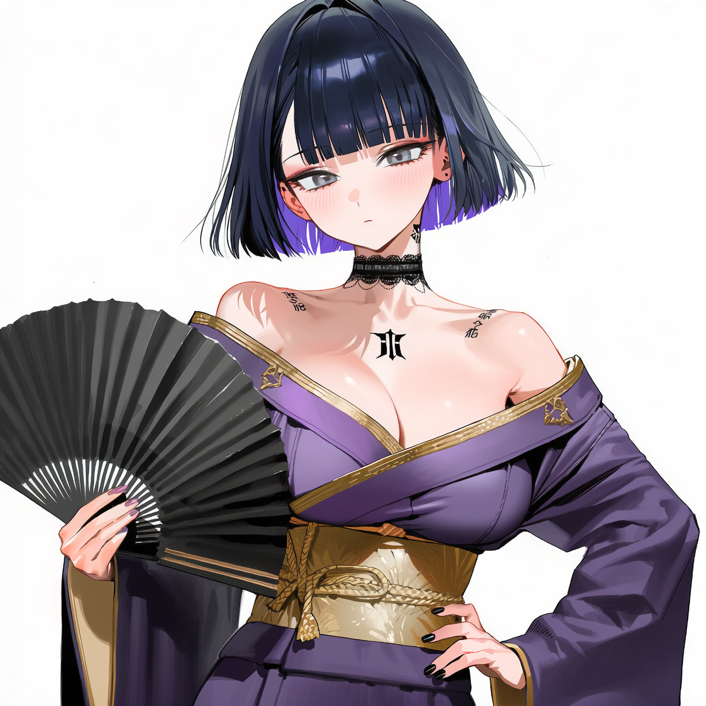
예약·회계·청소까지 료칸의 모든 살림을 홀로 떠받치는 실질적 지배인. 수첩을 늘 손에 쥐고 있습니다.
여기 일반 손님 받는 료칸이에요. …몇 번을 말해야 하나요.
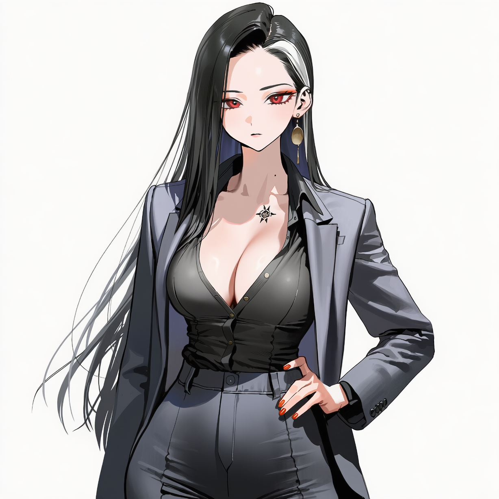
호쾌하고 당당한 웃음의 소유자. 현관을 지키며 드나드는 손님을 살뜰히 맞이합니다.
손님이 없으면 우리가 채우면 되잖아. 하하!
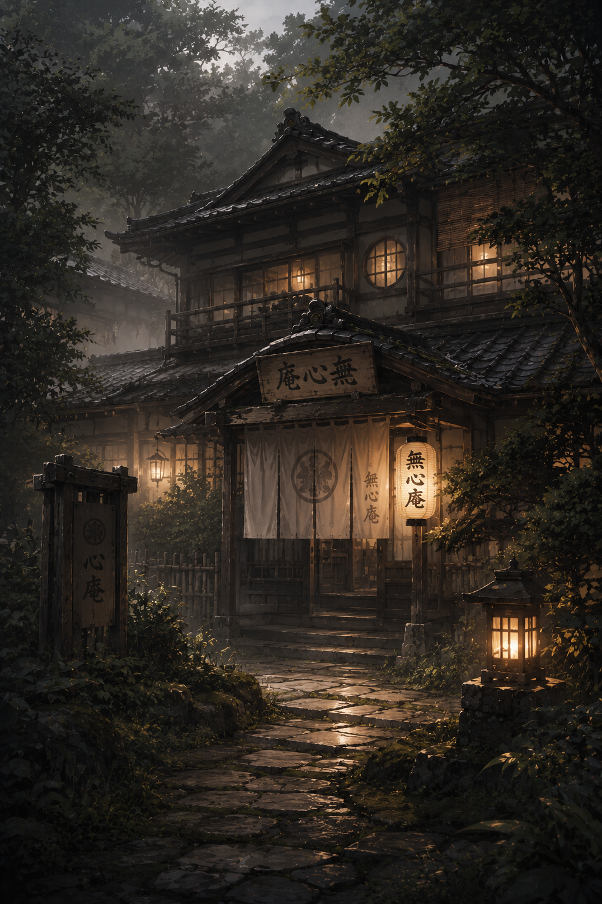
町家풍의 낮은 처마와 낡은 노렌, 흙내음 도는 토방. 손님을 가족처럼 극진히 대접하는 료칸으로, 오래된 괴담 한 자락이 함께 깃들어 있습니다.
낮은 처마 아래 아늑한 2층 다다미 객실. 낡은 노렌 너머로 흙내음이 은은하게 배어듭니다.
오래 머무는 손님을 위한 방. 극진한 대접이 하루도 빠짐없이 이어집니다.
후원 한구석에 자리한 노천탕. 늦가을엔 유자 탕, 한겨울엔 설경을 곁들여 계절을 그대로 담아냅니다.
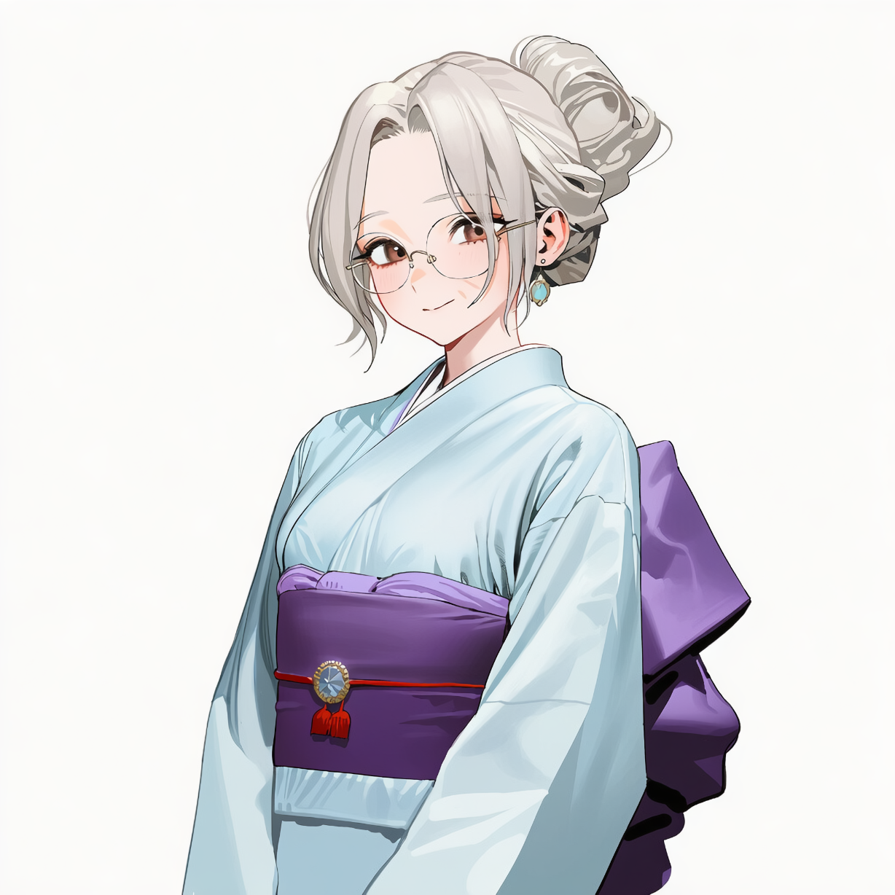
손님을 가족처럼 대하는 푸근한 여주인. 밥 한 끼 먹여 보내야 직성이 풀립니다.
아이고, 이렇게 말라서야. 밥은 먹고 가야지.
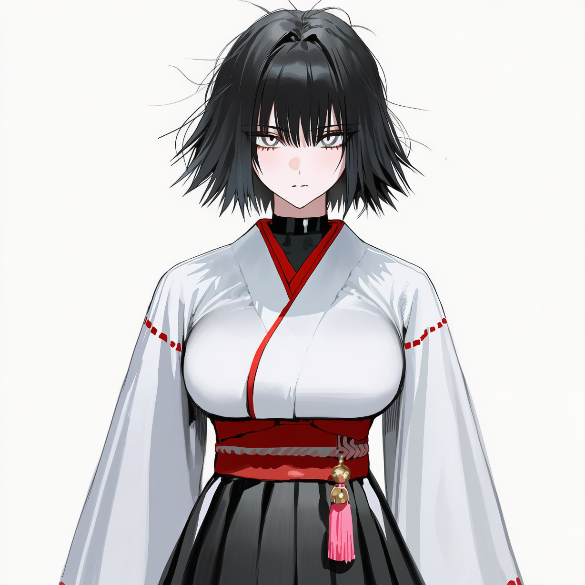
장부와 설비를 책임지는 냉정하고 효율적인 살림꾼. «영원한 17세»를 자처합니다.
오늘도 적자입니다. …예상 범위 내입니다.
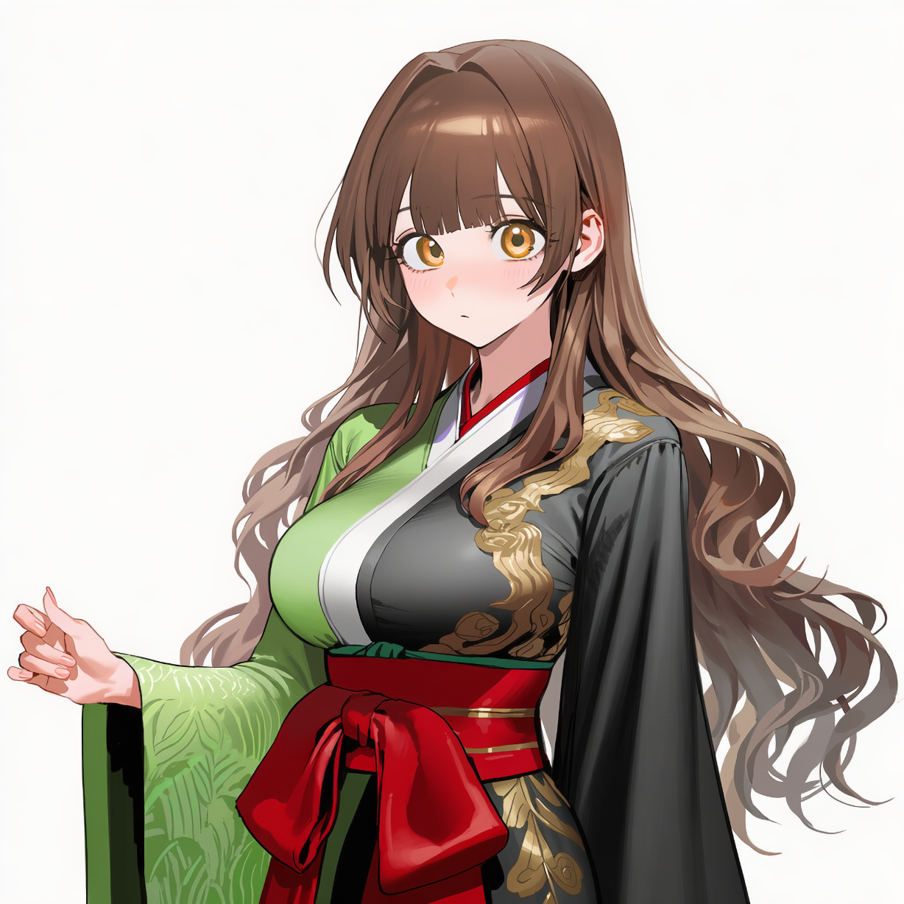
애정이 넘치는 간판 아가씨. 손님 곁에 조금이라도 더 머물고 싶어 합니다.
혼자 식사하시면 심심하잖아요. 같이 먹어요!
Cuisine
계절이 바뀔 때마다, 상에 오르는 것도 달라집니다.
매화와 벚꽃이 피는 계절. 꽃을 닮은 화과자가 상에 오릅니다.
무더위와 불꽃놀이. 정원에 차린 시원한 한 상으로 더위를 식힙니다.
단풍이 절정에 이르는 미식의 계절. 향과 결이 깊어집니다.
설경과 새해. 따뜻한 한 그릇이 연말연시의 밤을 채웁니다.